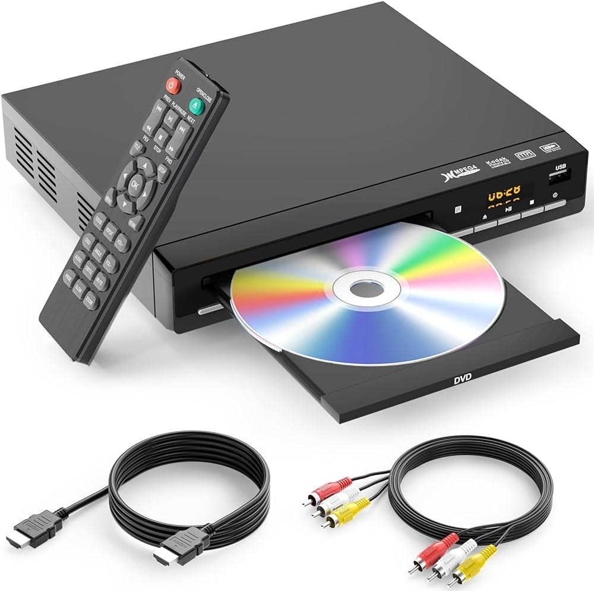
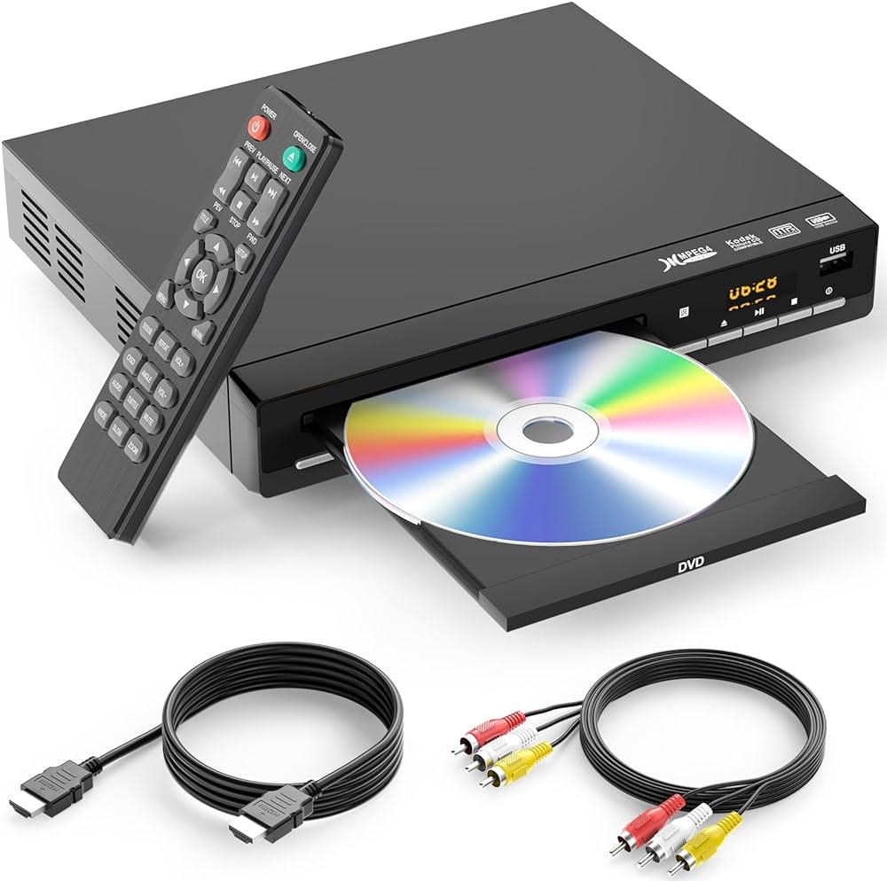

Let's Get Physical!
In this decade, digital media has become the way to store your movies, games,
and memories. All it takes is one really bad day to have all those important files
vanish in a flash, and when you least expect it. It might even sound familiar.
We've been there, and we believe you do not have to!
This is where Virtual Playback comes in! We are strong advocates that your digital
scrapbook or entertainment collage should have a handy backup on rainy days, whether
it be a sudden server failure or the internet is on the fritz. We supply various
options for physical media type, and players for those who left their ancient tech
in the dust.
- CD ROMS
- DVDs
- HD DVD
- Blu-Rays
- Internal Optical Drives
- CD and DVD players
- And for the gamers out there, Retro Consoles, Games, and Accessories
REPAIRS IN HOUSE AND A 3-YEAR WARRANTY ON ALL PURCHASES
So, What Are You Waiting For?
Don't wait before its too late! Take control of your storage today!